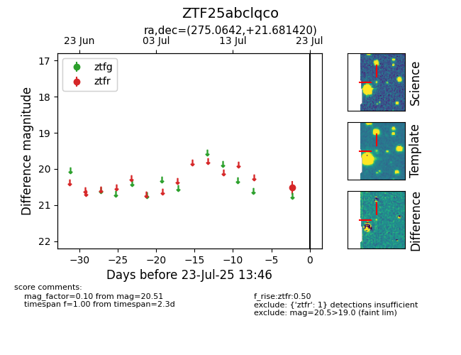

Target ZTF25abclqco at 2025-07-23 13:46, see:
FINK: fink-portal.org/ZTF25abclqco
Lasair: lasair-ztf.lsst.ac.uk/objects/ZTF25abclqco
ALeRCE: alerce.online/object/ZTF25abclqco
alt names
ZTF25abclqco (ztf,fink)
coordinates:
equatorial (ra, dec) = (275.0642,+21.68142)
galactic (l, b) = (49.3528,+16.29803)
photometry
last ztfr=20.51
1 ztfr detections
